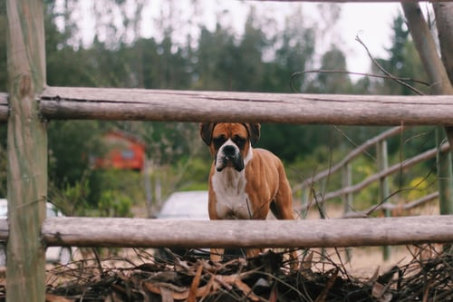

Boxer Gallery
The name "Boxer" is supposedly derived from the breed's tendency to play by standing on its hind legs and "boxing" with its front paws.[4] According to Andrew H. Brace's Pet Owner's Guide to the Boxer, this theory is the least plausible explanation.[29] He claims, "it's unlikely that a nation so permeated with nationalism would give to one of its most famous breeds a name so obviously anglicised"
The Boxer is a medium to large, short-haired breed of dog, developed in Germany. The coat is smooth and tight-fitting; colors are fawn, brindled, or white, with or without white markings. Boxers are brachycephalic (they have broad, short skulls), have a square muzzle, mandibular prognathism (an underbite), very strong jaws, and a powerful bite ideal for hanging on to large prey. The Boxer was bred from the Old English Bulldog and the now extinct Bullenbeisser, which became extinct by crossbreeding rather than by a decadence of the breed. The Boxer is part of the Molosser group, a category of solidly built, large dog breeds that all descend from the same common ancestor, the large shepherd dog known as a Molossus. The Boxer is a member of the American Kennel Club (AKC) Working Group.ero repellat.
